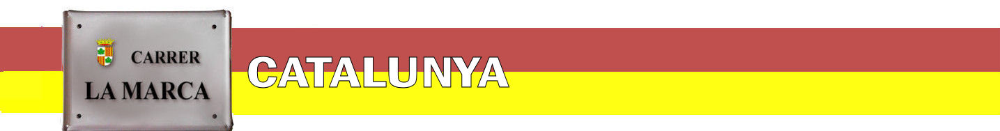
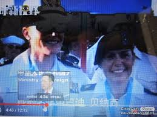
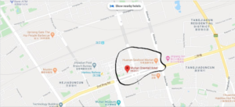
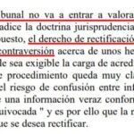

CHINA LE PONE NOMBRE Y APELLIDO NORTEAMERICANOS AL PACIENTE CERO DE WUHAN
MAATJE BENASSI SERÍA LA MILITAR ESTADOUNIDENSE QUE PROPAGÓ EL COVID-19 EN EL MERCADO DE MARISCOS.La línea editorial de CARRER LA MARCA consistirá en seguir investigando la
hipótesis —en nada absurda— de que el virus —natural o artificial— exhiba una procedencia estadounidense y haya sido incluso contagiado deliberadamente a los chinos siguiendo las órdenes de los criminales
neocon sionistas que controlan el Pentágono.Pero conviene recordar y subrayar que, por ahora, es
sólo una hipótesis, reforzada por algunos indicios nada desdeñables, mas
no demostrada con pruebas incuestionables. El periodista norteamericano George Webb, de Washington DC, implementa esta directriz interpretativa, compartida no sólo por las autoridades chinas de forma oficiosa, sino por muchos críticos y buena parte de la población mundial.La gente desconfía en efecto, y con razón, de los EEUU, cuyo historial de crímenes de guerra y delitos de lesa humanidad supera ya, en reñida competencia con el Imperio Británico, los de cualquier otro país del planeta.
Según George Webb, el cierre de Fort Detrick unos meses antes del brote de Wuhan guarda relación con la pandemia.A quince minutos de Fort Detrick estaría Fort Belvoir, lugar donde presuntamente se entrenaba el equipo estadounidense que participó en los Juegos Militares Mundiales de Wuhan celebrados en octubre de 2019.Un miembro de ese equipo, que sería además oficial de inteligencia ya contagiado por el virus pero asintomático,
habría transmitido el Covid-19 a los chinos de manera deliberada paseándose maliciosamente por el mercado de Wuhan. Además, habría infectado a otros miembros de la delegación estadounidense, que presentaron masivos casos de una extraña neumonía hasta el punto de incapacitar a la mayoría de sus deportistas para la obtención de las esperadas medallas.Además, por si fuera poco, Maatje Benassi tendría
un hermano llamado Matthew Benassi , militar de inteligencia que habría desarrollado funciones de investigador en Fort Detrick hasta la clausura del laboratorio.
Los datos en cuestión no han podido ser verificados por CARRER LA MARCA, y son negados por otros medios de prensa, pero se han convertido en algo así como
la versión oficiosa de los hechos con que Pekín ha venido respondiendo a las afirmaciones iniciales de un senador estadounidense en las que acusaba a China de fabricar el virus.Así, según informa
La Vanguardia :
Durante semanas, en Washington sólo se habló del coronavirus para culpar a China.El término 'virus chino' había sido utilizado ya por el secretario de Estado, Mike Pompeo, y varios congresistas republicanos.A mediados de febrero, el senador republicano Tom Cotton señaló sin pruebas a un 'superlaboratorio' cerca de Wuhan como origen del virus y prometió hacer rendir cuentas a 'los responsables del daño causado al mundo'.
Por tanto, los primeros en promover una
teoría de la conspiración —en perjuicio de China— han sido norteamericanos.Y no precisamente oscuros periodistas, sino nada más y nada menos que un senador, Tom Cotton, quién imputó a los chinos por crímenes de lesa humanidad de forma completamente gratuita e infundada.Podríamos hallarnos quizá ante
una guerra de teorías de la conspiración carentes, en todo caso, de sustento , pero conviene no olvidar los antecedentes criminales del Pentágono y el hecho incuestionable de que China ha sido el primer perjudicado por la pandemia, aunque en estos momentos ya la haya superado.

Además, en la versión china hay datos verificados y no sujetos duda razonable que constituyen indicios de una probable
operación estadounidense de falsa bandera :
El portavoz de las CDC (la autoridad sanitaria estadounidense), reconoció la existencia de casos de fallecimiento por coronavirus en EEUU anteriores al brote de Wuhan pero diagnosticados como gripe
influenza
Estos hechos son los que nos inclinan a favor de proseguir con
la hipótesis china sobre el virus norteamericano antes que con el
bulo norteamericano sobre el virus chino , alegremente propalado mediante el simple uso del término 'virus chino' por parte de los
neocon sionistas —y, por ende,
mentirosos compulsivos — Donald J. Trump y compañía.
Figueres, la Marca Hispànica, 8 de abril de 2019
Posted On: 2020-04-08T00:00:00
Posted By: EDITOR



Content Date: 2020-04-08
Download Date: 2021-04-21
Document ID: L0C04APCA